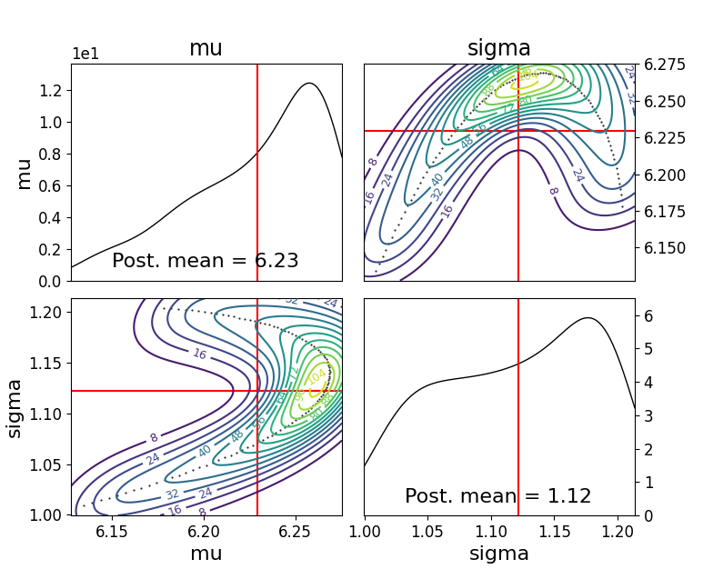

Defining A Model¶
User defined Model¶
We give below an example of a user defined model incorporating all of the features needed
import logging
from numbers import Number
import numpy as np
import scipy
from abcpy.probabilisticmodels import ProbabilisticModel, Continuous, InputConnector
import torch
from torch.autograd.functional import jacobian
class Gaussian(ProbabilisticModel, Continuous):
def __init__(self, parameters, name='Gaussian'):
# We expect input of type parameters = [mu, sigma]
if not isinstance(parameters, list):
raise TypeError('Input of Normal model is of type list')
if len(parameters) != 2:
raise RuntimeError('Input list must be of length 2, containing [mu, sigma].')
input_connector = InputConnector.from_list(parameters)
super().__init__(input_connector, name)
self.ordered_transforms = [False, torch.exp]
self.ordered_inverse_transforms = [False, torch.log]
def _check_input(self, input_values):
# Check whether input has correct type or format
if len(input_values) != 2:
raise ValueError('Number of parameters of Normal model must be 2.')
# Check whether input is from correct domain
mu = input_values[0]
sigma = input_values[1]
if sigma < 0:
return False
return True
def forward_simulate(self, input_values, k, rng=np.random.RandomState()):
# Extract the input parameters
# input_values = self.transform_variables(input_values) # do this outside in inference.
mu = input_values[0]
sigma = input_values[1]
np.array(rng.normal(mu, sigma, k))
result = self.normal_model_pytorch([float(input_value) for input_value in input_values], k)#[np.array([x]) for x in vector_of_k_samples]
return result
def normal_model_pytorch(self, input_values, n, return_grad = False):
values = []
for n in range(0,n):
value = []
mu = torch.tensor(input_values[0], requires_grad = True)
sigma = torch.tensor(input_values[1], requires_grad = True)
variables = [mu,sigma]
yval = torch.randn(1)*sigma + mu
value.append(yval.item())
values.append(np.array(value))
return values
def grad_forward_simulate(self, input_values, k, rng=np.random.RandomState()):
# Takes input in the form: [a,....,z]
#print(input_values)
# Outputs: array: [x1, x2, ...... ,xn, [dx1/dtheta1, dx1/dtheta2], ...... [dxn/dtheta1, dxn/dtheta2],]
result = self.grad_normal_model_pytorch([float(input_value) for input_value in input_values], k)#[np.array([x]) for x in vector_of_k_samples]
return result
def grad_normal_model_pytorch(self, input_values, n, return_grad = False):
values = []
gradvalues = []
for n in range(0,n):
mu = torch.tensor(input_values[0], requires_grad = True)
sigma = torch.tensor(input_values[1], requires_grad = True)
z = torch.randn(1)
variables = [mu,sigma]
yval = z*sigma + mu
values.append(yval.item())
yval.backward()
gradvalue = []
for var in variables:
gradvalue.append(var.grad.item())
gradvalues.append(gradvalue)
return values + gradvalues
def _check_output(self, values):
if not isinstance(values, Number):
raise ValueError('Output of the normal distribution is always a number.')
# At this point values is a number (int, float); full domain for Normal is allowed
return True
def get_output_dimension(self):
return 1
def jacobian_list(self):
return self.ordered_transforms
def transform_list(self):
return self.ordered_transforms
def inverse_transform_list(self):
return self.ordered_inverse_transforms
- class ModelFile.UserDefinedModel¶
- __init__(parameters: List[Any], name: str | None = None)¶
When initialising the user-defined model, this function ensures that the model works in the abcpy structure by adding the input parameters (either prior pdfs or hyperparameters) into a graph. This graph is then used throughout the graph tools class and elsewhere in the existing abcpy structure.
- Parameters:
parameters – List of parameters.
name – Optional name for the model.
for example you could initialise your model like this
mu = Normal([4, 1], name='mu') sigma = LogNormal([1,1], name='sigma') self.model = Gaussian([mu, sigma], name='GaussianTest')
or
mu = Normal([4, 1], name='mu') self.model = Gaussian([mu, 1])
- _check_input(parameter_values: List[Any]) bool¶
Check if the set of possible parameter values for the model are correct.
- Parameters:
parameter_values – List of potential parameter values.
- Returns:
Returns True if no errors are detected, and False otherwise.
- forward_simulate(parameter_values: List[Any], n: int) List[Any]¶
Forward simulate the model.
- Parameters:
parameter_values – List of parameters for the model.
n – Number of required simulations.
- Returns:
Returns a set of n simulations.
- grad_forward_simulate(parameter_values: List[Any], n: int) Tuple[List[Any], List[List[float]]]¶
Compute the gradient of the forward simulation.
- Parameters:
parameter_values – List of parameters for the model.
n – Number of required simulations.
- Returns:
Returns a tuple of simulations and their corresponding gradients.
- _check_output(output_values: List[Any]) bool¶
Check if the output values are in the correct form.
- Parameters:
output_values – List of output values from the forward simulate function.
- Returns:
Returns True if the output is correct, and False otherwise.
- get_output_dimension() int¶
- Returns:
Returns the output dimension of the simulator model.
- transform_list() List[bool | Callable]¶
- Returns:
Returns a list of transformation functions for the model parameters.
- inverse_transform_list() List[bool | Callable]¶
- Returns:
Returns the inverse of the transformations from transform_list.
- Jacobian_list() List[bool | Callable]¶
- Returns:
Returns the gradient of the transformations from transform_list.
You can then use this model as follows
import numpy as np
from abcpy.approx_lhd import EnergyScore, KernelScore
from abcpy.backends import BackendDummy
from abcpy.continuousmodels import Normal, LogNormal
from abcpy.inferences import adSGLD, SGLD
from abcpy.statistics import Identity
from Gaussian_model import Gaussian
# setup backend
dummy = BackendDummy()
mu = Normal([5, 1], name='mu')
sigma = LogNormal([1,1], name='sigma')
model = Gaussian([mu, sigma])
stat_calc = Identity(degree=2, cross=False)
dist_calc = EnergyScore(stat_calc, model, 1)
y_obs = model.forward_simulate([6,1], 100, rng=np.random.RandomState(8))
sampler = adSGLD([model], [dist_calc], dummy, seed=1)
journal = sampler.sample([y_obs], 100, 100, 2000, step_size=0.0001, w_val = 300, diffusion_factor=0.01, path_to_save_journal="tmp.jnl")
journal.plot_posterior_distr(path_to_save="posterior.png")
journal.traceplot()
running this code creates a variable journal containg details of the run and produces the following traceplot of your samples:
{kind=link}